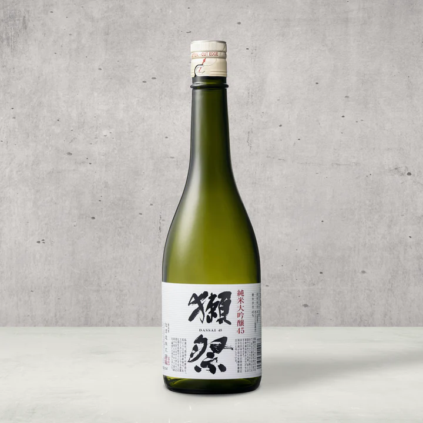
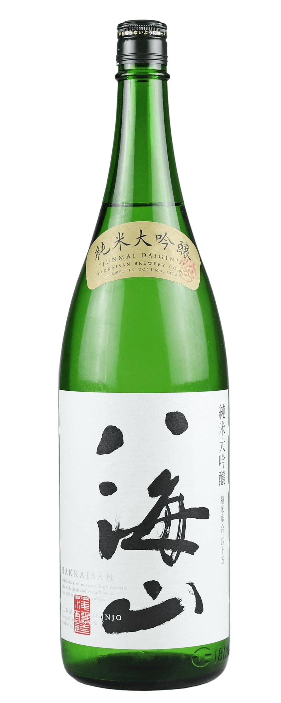
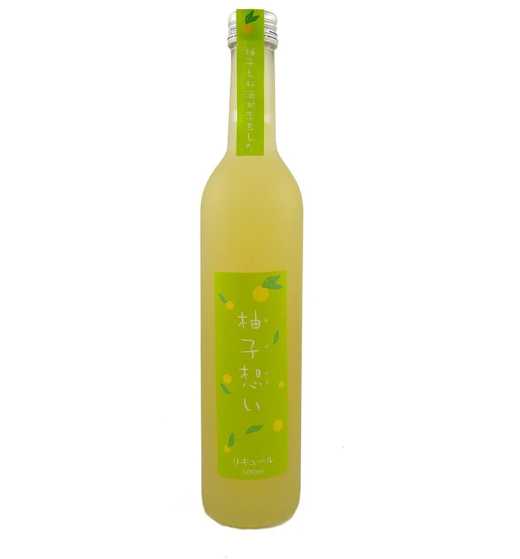
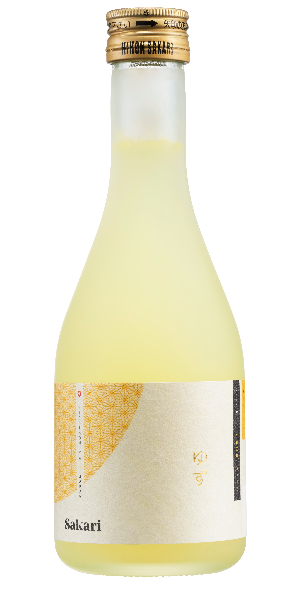
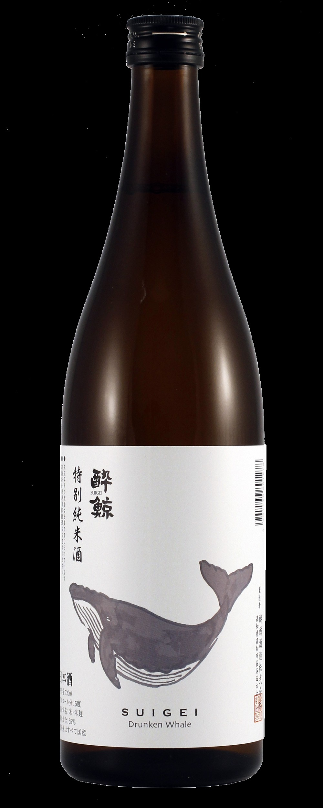
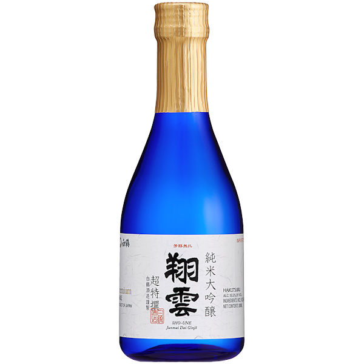
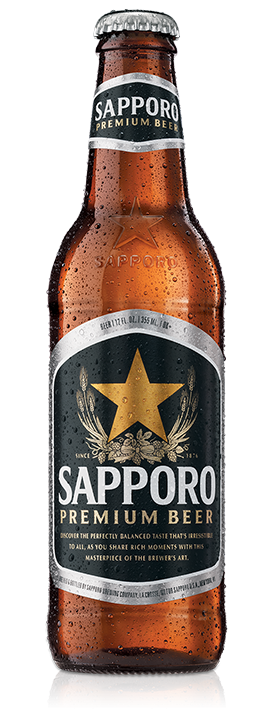
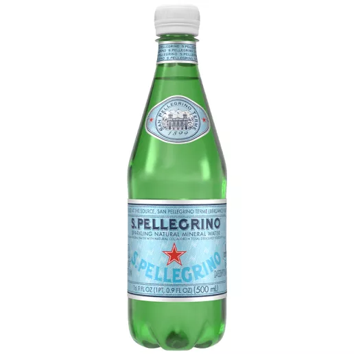
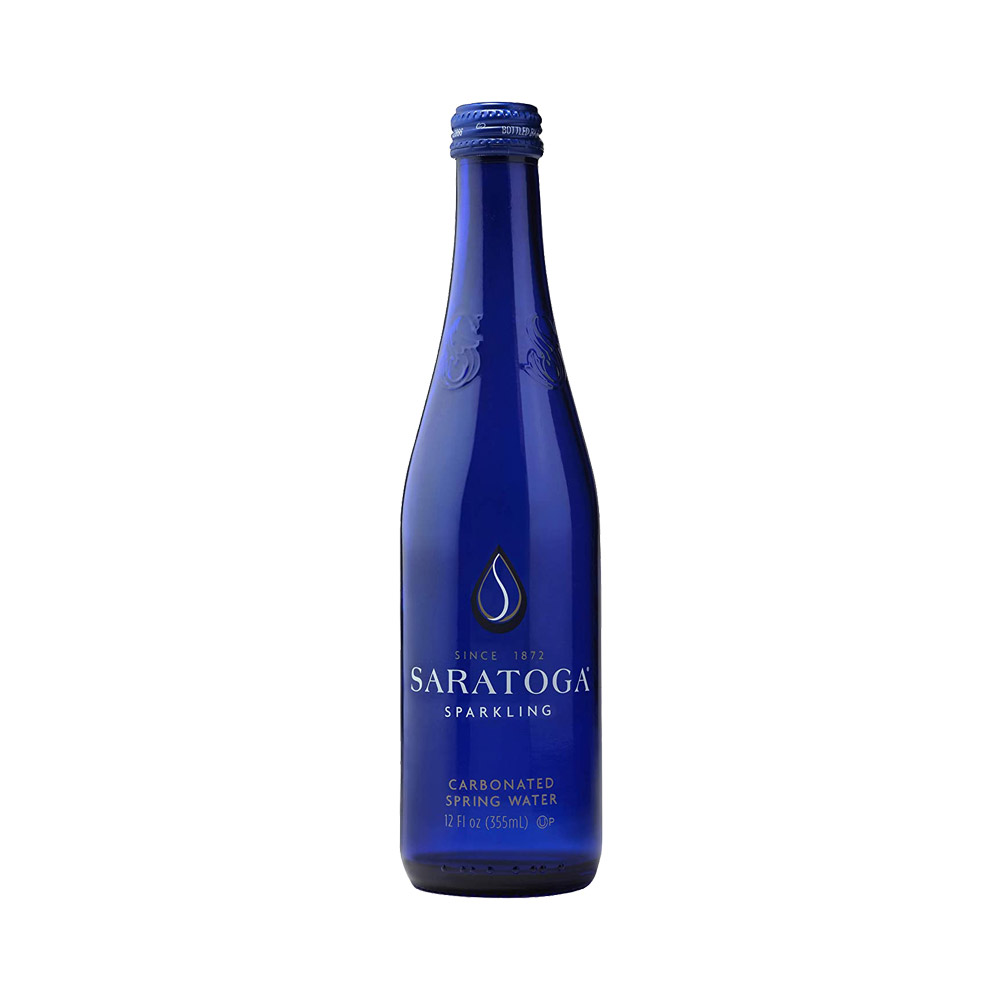
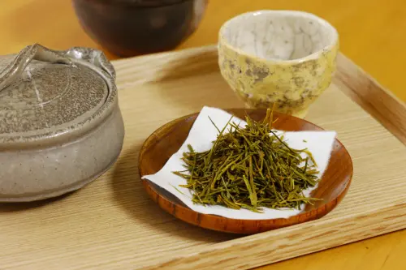

Sake & Beverage Selection
Sake

Dassai 45 Junmai Daiginjo
Chewy and full of body. Light honeydew aromas with the subtle sweetness of muscat grapes, complemented by an undercurrent of crisp dryness. Reminiscent of white wine in the best possible way.
OriginYamaguchi Prefecture, Japan
Rice Polishing Ratio45%
SMV+3 (Slightly Dry)
Acidity1.4
Serving TempChilled
$70 (720ml) | $35 (300ml)

Kubota Junmai Daiginjo
A refined sake with a clean finish. Delicate notes of pear and apple create a light, refreshing profile, perfect for subtle dishes.
OriginNiigata Prefecture, Japan
Rice Polishing Ratio50%
SMV+2 (Slightly Dry)
Acidity1.3
Serving TempChilled
$78 (720ml) | $38 (300ml)

Hakkaisan 45 Junmai Daiginjo
A refined sake with a restrained and delicate aroma, offering hints of steamed rice with the barest touch of florality and earthiness. The first sip evokes a gentle rice flavor with a pristine and invigorating dry finish.
OriginNiigata Prefecture, Japan
Rice Polishing Ratio45%
Alcohol Content16%
SMV+5 (Dry)
Acidity1.2
Serving TempChilled
$89 (720ml) |42 (300ml)

Yuzu Omoi Sake
A refreshing citrus-infused sake with a sweet-tart balance. Bright yuzu flavors make it a perfect companion for lighter fare.
OriginAkita Prefecture, Japan
TypeYuzushu (Citrus-infused Sake)
Alcohol Content8%
Serving TempChilled
$32

Nihon Sakari Yuzu
A vibrant yuzu-infused sake with a bright, citrusy profile. Its sweet-tart balance and refreshing finish make it an ideal aperitif or pairing for light dishes.
OriginHyogo Prefecture, Japan
TypeYuzushu (Citrus-infused Sake)
Alcohol Content10%
Serving TempChilled or On the Rocks
$32 (300 ml)

Suigei “Drunken Whale” Tokubetsu Junmai (720ml)
A dry sake with a clean, crisp profile. Subtle umami notes make it a versatile pairing for richer dishes.
OriginKochi Prefecture, Japan
Rice Polishing Ratio55%
SMV+5 (Dry)
Acidity1.6
Serving TempRoom Temperature or Warm
$65

Hakutsuru Junmai Dai Ginjo Sho-Une Premium Sake (300ml)
A supreme sake with a velvety smooth texture. Fruity aromas of white peach and pear create a deeply complex yet easy-drinking profile.
OriginHyogo Prefecture, Japan
Rice Polishing Ratio50%
Alcohol Content15.5%
Serving TempChilled or Room Temperature
$42
Beer

Sapporo Premium Beer (12 Oz)
A refreshing lager with a crisp, refined flavor and a clean finish, ideal for any occasion.
OriginU.S., Canada, Vietnam
ABV4.9%
Calories140
Carbohydrates10.3 grams
$8
Beverages

S.Pellegrino Sparkling Water (20 Oz)
A crisp and clean sparkling water with fine bubbles, perfect for refreshing the palate.
OriginSan Pellegrino Terme, Italy
$5

Saratoga Sparkling Water (12 Oz)
A premium carbonated spring water with fine bubbles, offering a crisp and refreshing taste.
OriginSaratoga Springs, USA
Since1872
$5.5

Hot Green Tea
A traditional Japanese green tea with a fresh, grassy flavor and a slightly astringent finish.
OriginJapan
TypeSencha Green Tea
Serving TempHot
$2